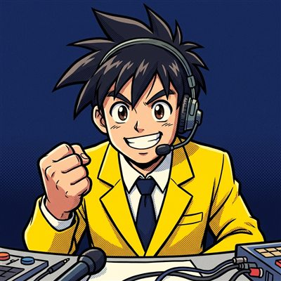

다섯 팀, 팀마다 60명. 실력도 재료도 똑같다. 다른 건 단 하나, 서로 소통하는 방식.
어떤 협력 방식이 가장 맛있는 발견을 만들어 낼까?
라면 레시피는 스위치 20개로 정해진다. 넣을까 말까, 길게 끓일까 짧게 끓일까. 조합은 1,048,576가지.
선수는 지도도 정답도 모른다. 아는 건 자기가 끓인 라면의 심사 점수(0~1) 하나. 재료끼리 궁합이 있어서, 하나만 바꾸면 오히려 맛이 떨어지기도 한다.
80라운드 뒤, 팀 60명의 평균 점수가 가장 높은 팀이 우승.
좋은 걸 바로 따라 하면 출발은 빠르다. 하지만 모두가 같은 레시피가 되는 순간, 다른 봉우리를 찾아볼 사람이 한 명도 남지 않는다. 처음 고른 봉우리가 작으면 다 같이 갇힌다.
세렌디피티(우연한 좋은 발견)는 서로 다른 레시피가 살아 있고, 그 둘이 마주칠 때만 생긴다. 모두 같으면 섞을 게 없고, 아무도 안 만나면 섞을 기회가 없다.
좋은 발견은 결국 퍼지되, 천천히 퍼지는 동안 여러 갈래가 따로 다듬어진다. 퍼뜨리는 속도와 다양함을 지키는 시간 사이의 균형이 핵심이다. 단, 문제가 쉬우면 빨리 모이는 쪽이 낫다.
모형: Lazer & Friedman (2007) "The Network Structure of Exploration and Exploitation"의 NK 지형 실험(N=20, K=5)에 섞기 규칙을 더해 다시 만든 것. 점수는 규칙을 가정한 결과이며, 한 판의 순위는 지형에 따라 달라질 수 있다.

캐스터 탱탱